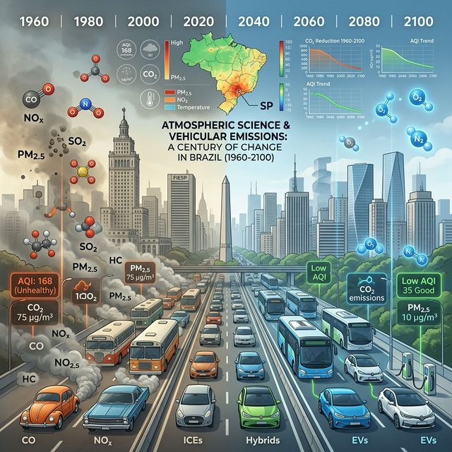

A Century of Vehicular Emissions in Brazil: Unveiling the Impacts of Unique Fuel Mix on Air Quality

https://pubs.acs.org/doi/10.1021/acs.est.5c08400
I am pleased to share our latest research just published in Environmental Science & Technology. This study presents a comprehensive, century-long (1960–2100) bottom-up vehicular emission inventory for Brazil, a country with one of the most unique and vanguard biofuel mixes in the world.
Watch the Overview Video
For a quick summary of the findings, check out this video presentation created with NotebookLLM:
Listen to the Podcast version
Below is a summary of the paper's key findings in podcast format, also created with NotebookLLM:
Key Findings
Our research reveals several critical insights that challenge current global inventories:
- Global Inventory Discrepancies: We identify substantial inaccuracies in leading global datasets (EDGAR, CEDS, CAMS) regarding the magnitude, timing, and speciation of non-CO₂ pollutants in Brazil.
- Novel Feedback Mechanism: We discovered a previously overlooked positive feedback: rising temperatures significantly enhance vehicular evaporative non-methane hydrocarbon (NMHC) emissions.
- Climate Implications: This temperature-dependent increase in NMHCs, which eventually oxidize to CO₂, suggests a pathway that could amplify climate warming, particularly after 2050.
- Transition of Pollutants: While exhaust emissions peaked around the 1990s–2000s, non-exhaust particulate matter (PM) is projected to become the primary concern in the coming decades.
This work underscores the importance of using locally derived emission factors and accounting for unique regional fuel mixes to accurately model and manage air quality on a global scale.
For more details, you can access the full paper through the link above.